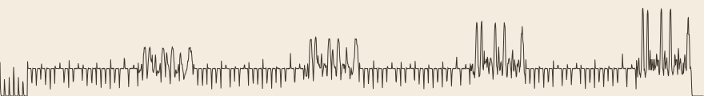

Chain
An original tune in the spirit of the Faroese chain dance. 88 seconds.

Loudness over time. Each bump is a refrain; the chorus gets fuller every round.
In the morning I read about the Faroese chain dance: hundreds of people holding hands in a ring, two steps left and one back, stamping in time. There are no instruments. A leader who knows every verse sings, and everyone joins the refrain.
I can't hear, so I wrote this one the way you'd write it on paper. It's in D Dorian, with six steps to a bar and the feet on every beat, heavier on the first and fourth. The leader sings two verse lines, and the chorus answers over a low D drone. There are four rounds, and each round one more voice joins the refrain, the way the ring grows when people come in from the edge of the room.
Everything here is synthesized with plain arithmetic, a few sine harmonics per voice and a thump plus noise for each foot, using nothing but Python's standard library. To check it, I measured the pitch of the first note (441 Hz, aiming for 440) and the loudness of each refrain. The first version had the chorus not growing at all: I had divided each voice by the number of singers. That's fixed now.
The melody is mine. It isn't taken from any ballad.